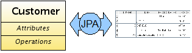
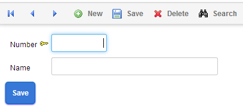
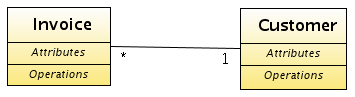
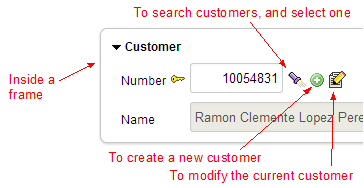
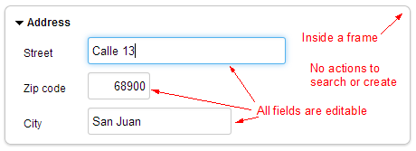
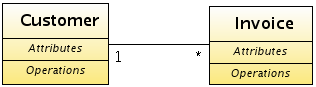
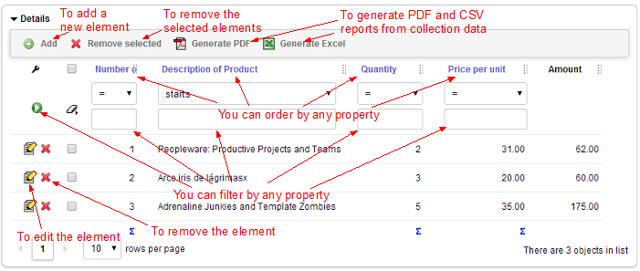
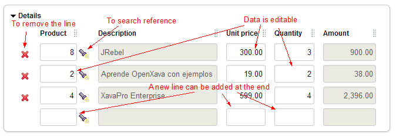

Java Persistence API (JPA) is the Java standard for object-relational mapping technique. Object-relational mapping allows you to access data in a relational database in an object-oriented fashion. In the Java applications you work only with objects. These objects are declared as persistent, and it's the JPA engine that is responsible for saving and reading objects from database to application.
JPA mitigates the so-called impedance mismatch problem caused due to the inherent difference between the structure of a relational database and that of the object oriented applications. A relational database structure consists of tables and columns with simple data whereas the object oriented applications have an absolutely different structure consisting of classes with references, collections, interfaces, inheritance, etc. In any Java application you use the Java classes for representing the business concept. You need to write a lot of SQL code to write the data from your objects to database and vice versa. JPA does it for you.
This lesson is an introduction to JPA. For a complete understanding of this standard technology, you would read a complete book dedicated to JPA. In fact, in the summary of this lesson you have several references to JPA books and documentation. OpenXava supports Jakarta Persistence 3.2 since v8.0 (and JPA 2.2 from v6.1 to v7.x).
Please skip this lesson, if you already know JPA.
JPA has 2 aspects. The first one is a set of Java annotations to add to your classes. This is used to mark them as persistent and further give details about mapping the classes to the tables. The second aspect is that of an API to read and write objects from your application. Let's look at the annotations first.
In JPA nomenclature a persistent class is called an entity. In other words we can say that an entity is a class whose instances are saved in the database. Usually each entity represents a business concept of the domain. Therefore we use a JPA entity as the basis for defining a business component in OpenXava. In fact you can create a full OpenXava application just from bare JPA entities. A JPA entity is defined in this way:
@Entity // To define this class as persistent
@Table(name="GSTCST") // To indicate the database table (optional)
public class Customer {
In OpenXava it is enough to mark Customer with @Entity annotation to recognize the object as a business component. In fact in OpenXava “entity” is synonymous to business component.The basic state of an entity is represented using properties. Entity properties are plain Java properties, with their respective getter and setter methods:
private String name;
public String getName() {
return name;
}
public void setName(String name) {
this.name = name;
}By default properties are persistent that is, JPA assumes that the name property is stored in a column named 'name' in the database table. If you do not want a property to be saved in the database you have to mark it as @Transient:
@Transient // Marked as transient, it is not stored in the database
private String name;
public String getName() {
return name;
}
public void setName(String name) {
this.name = name;
}Note that we can not only annotate the field, but we can also annotate the getter if we want:
private String name;
@Transient // We mark the getter, so all JPA annotations in this entity must be in getters
public String getName() {
return name;
}
public void setName(String name) {
this.name = name;
}This rule applies to all JPA annotations. You can annotate the field (field-base access) or the getter (property-base access). Do not mix the two styles in the same entity.
Other useful annotations for properties are @Column to specify the name and length of the table column and @Id to indicate which property is the key property. You can see the use of these annotations in an already mentioned Customer entity:
@Entity
@Table(name="GSTCST")
public class Customer {
@Id // Indicates that number is the key property (1)
@Column(length=5) // Here @Column indicates only the length (2)
private int number;
@Column(name="CSTNAM", length=40) // name property is mapped to CSTNAM
private String name; // column in database
public int getNumber() {
return number;
}
public void setNumber(int number) {
this.number = number;
}
public String getName() {
return name;
}
public void setName(String name) {
this.name = name;
}
}It's mandatory that at least one property should be an id property (shown as 1). You have to mark the id property with @Id and usually it maps to the table key column. @Column can be used to indicate just the length without the column name (shown as 2). The length is used by the JPA engine for schema generation. It's also used by OpenXava to know the size of the user interface editor. From the above Customer entity code OpenXava generates the next user interface:

Now, you know how to define basic properties in your entity. Let's learn how to declare relationships between entities using references and collections.
An entity can reference another entity. You only have to define a regular Java reference annotated with the @ManyToOne JPA annotation:
@Entity
public class Invoice {
@ManyToOne( // The reference is persisted as a database relationship (1)
fetch=FetchType.LAZY, // The reference is loaded on demand (2)
optional=false) // The reference must always have a value
@JoinColumn(name="INVCST") // INVCST is the foreign key column (3)
private Customer customer; // A regular Java reference (4)
// Getter and setter for customerWe declare a reference to Customer inside Invoice in a plain Java style (shown as 4). The annotation @ManyToOne (shown as 1) is to indicate that this reference is stored as a many-to-one database relationship between the table for Invoice and the table for Customer, using the INVCST (shown as 3) column as foreign key. The annotation @JoinColumn (shown as 3) is optional. JPA assumes default values for join column (CUSTOMER_NUMBER in this case).
If you use fetch=FetchType.LAZY (shown as 2) the customer data is not loaded until you use it once. That is at the given moment that you use the customer reference, for example if you call the method invoice.getCustomer().getName() the data for the customer is loaded from the database at this point in time. It's advisable to always use lazy fetching.
A regular Java reference usually corresponds to a @ManyToOne relationship in JPA and to an association with *..1 multiplicity in UML notations:

This is the user interface that OpenXava generates automatically for a reference:

You have seen how to reference other entities. You can also reference other objects that are not entities, and even the embeddable objects.
In addition to entities you can also use embeddable classes to model some concepts of your domain. If you have an entity A that has a reference to B, you would model B as an embeddable class when:
Sometimes the same concept can be modeled as embeddable or as an entity. For example, the concept of an address. If the address is shared by several persons then you must use a reference to an entity, while if each person has his own address then an embeddable object is a good option.
Let's model an address as an embeddable class. It's easy. Create a plain Java class and annotate it as @Embeddable:
@Embeddable // To define this class as embeddable
public class Address {
@Column(length=30) // You can use @Column as in an entity
private String street;
@Column(length=5)
private int zipCode;
@Column(length=20)
private String city;
// Getters and setters
...
}And now, creating a reference to Address from an entity is also easy. It's just a regular Java reference annotated as @Embedded:
@Entity
@Table(name="GSTCST")
public class Customer {
@Embedded // References to an embeddable class
private Address address; // A regular Java reference
// Getter and setter for address
...
}From a persistence viewpoint an embeddable object is stored in the same table as the container entity. In this case the street, zipcode and city columns are in the table for Customer. Address has no table for itself.
This is the user interface that OpenXava generates automatically for a reference to an embeddable class.

An entity can have a collection of entities. You only have to define a regular Java collection annotated as @OneToMany or @ManyToMany:
@Entity
public class Customer {
@OneToMany( // The collection is persistent (1)
mappedBy="customer") // The customer reference from Invoice is used
// to map the relationship at the database level (2)
private Collection<Invoice> invoices; // A regular Java collection (3)
// Getter and setter for invoices
...
}As you can see we declare a collection of Invoice inside Customer in a plain Java style (marked as 3). Annotation @OneToMany (shown as 1) indicates that this collection is stored as a one-to-many database relationship between the table for Customer and the table for Invoice, using the column for customer for mapping the reference in Invoice (usually a foreign key to Customer table from Invoice table) .
A Java collection of entities corresponds to an @OneToMany or @ManyToMany relationship in JPA and to an association with 1..* or *..* multiplicity in UML notations:

You can simulate the semantic of embeddable objects using a collection of entities with the cascade attribute of @OneToMany:
@Entity
public class Invoice {
@OneToMany(mappedBy="invoice",
cascade=CascadeType.REMOVE) // Cascade REMOVE to simulate embedded
private Collection<InvoiceDetail> details;
// Getter and setter for details
...
}InvoiceDetail is an entity:
@Entity
public class InvoiceDetail {
...
}This is the default user interface for a collection of entities:

There is a slight difference in the behavior of the user interface if you use cascade REMOVE or ALL. With cascade REMOVE or ALL when the user clicks to add a new element, he can actually enter all the data for the element. On the other hand if your collection is not cascade REMOVE or ALL, when the user clicks to add a new element a list of entities is shown for the user to choose.
Moreover, you can define a collection of actual embeddable objects. We could rewrite the above invoice details examples in this way:
@Entity
public class Invoice {
@ElementCollection
private Collection<InvoiceDetail> details;
...
}Note that we annotate the collection with @ElementCollection. In this case InvoiceDetail is an @Embeddable class:
@Embeddable
public class InvoiceDetail {
...
}The user interface that OpenXava generates for an @ElementCollection is:

In an element collection the user can edit any property of any row in any moment. He can also remove or add lines, but the data won't be saved in the database until the main entity would be saved.
There are many cases that can be modeled with both @OneToMany(cascade=CascadeType.REMOVE) or @ElementCollection. Both options delete the collection elements when the container entity is deleted. Both options have the embedded semantic, that is we can say "has a". Choosing an option is very easy for an OpenXava developer, because each option generates a very differente user interface.
It's better to avoid the use of composite keys. You always have the option to use an auto generated hidden id. Although, sometimes you may need to connect to a legacy database or maybe the schema design has been done by someone that likes composite keys, and you must use composite keys albeit it's not the best choice. Therefore, here you will learn how to use a composite key.
Let's see a simple version of an Invoice entity:
package com.yourcompany.invoicing.model;
import java.time.*;
import java.util.*;
import jakarta.persistence.*; // javax.persistence.* before OpenXava 8.0
import org.openxava.annotations.*;
@Entity
@IdClass(InvoiceKey.class) // The id class has all the key properties (1)
public class Invoice {
@Id // Though we have id class it still needs to be marked as @Id (2)
@Column(length = 4)
private int year;
@Id // Though we have id class it still needs to be marked as @Id (2)
@Column(length = 6)
private int number;
@Required
private LocalDate date;
@Stereotype("MEMO")
private String remarks;
// REMEMBER TO GENERATE THE GETTERS AND SETTERS FOR THE ABOVE FIELDS
}
If you want to use year and number as a composite key for your Invoice, a way to do so is by marking year and number as @Id (shown as 2), and also to have an id class (shown as 1). The id class must have year and number as properties. You can see InvoiceKey here:
package com.yourcompany.invoicing.model;
public class InvoiceKey implements java.io.Serializable { // The key class must be serializable
private int year; // It contains the properties marked ...
private int number; // ... as @Id in the entity
public boolean equals(Object obj) { // It must define equals method
if (obj == null) return false;
return obj.toString().equals(this.toString());
}
public int hashCode() { // It must define hashCode method
return toString().hashCode();
}
public String toString() {
return "InvoiceKey::" + year + ":" + number;
}
// REMEMBER TO GENERATE THE GETTERS AND SETTERS FOR year AND number
}
This code shows some of the requirements of a primary key class, such as to be serializable and to implement hashCode() and equals(). OpenXava Studio (or Eclipse) can generate them for you with Source > Generate hashCode and equals()...
You have seen how to write your entities using JPA annotations and how OpenXava interprets them in order to generate a suitable user interface. Now you are going to learn how to use the JPA API to write and read from the database programmatically.
The key class to manage your entities with JPA is jakarta.persistence.EntityManager (javax.persistence.EntityManager before OpenXava 8.0). An EntityManager allows you to save, modify and search entities programmatically.
This is the typical way of using JPA from a non-OpenXava application:
EntityManagerFactory f = // You need an EntityManagerFactory to create a manager
Persistence.createEntityManagerFactory("default");
EntityManager manager = f.createEntityManager(); // You create the manager
manager.getTransaction().begin(); // You have to start a transaction
Customer customer = new Customer(); // Now you create your entity
customer.setNumber(1); // and populate it
customer.setName("JAVI");
manager.persist(customer); // persist marks the object as persistent
manager.getTransaction().commit(); // On commit changes are done into database
manager.close(); // You have to close the managerYou can see how verbose this snippet of code is. Too much of bureaucratic code. If you wish you can write JPA code in this way inside an OpenXava application. On the other hand OpenXava offers you a much more succinct way to do it:
Customer customer = new Customer();
customer.setNumber(1);
customer.setName("PEDRO");
XPersistence.getManager().persist(customer); // This is enough (1)Inside an OpenXava application you can obtain the manager by means of org.openxava.jpa.XPersistence class. You don't need to close the manager, start and commit a transaction. This dirty work is taken care of by OpenXava for you. The above code is enough to save a new entity to the database (shown as 1).
If you want to modify an existing entity you have to do:
Customer customer = XPersistence.getManager()
.find(Customer.class, 1); // First, you search the object to modify (1)
customer.setName("PEDRITO"); // Then, you change the object state. No moreIn order to modify an object you only need to find and modify it. JPA is responsible for saving the changes to the database on transaction commit (sometime sooner) and OpenXava commits the JPA transaction automatically.
You have seen how to search by primary key using find(). Moreover, JPA allows you to use queries too:
Customer pedro = (Customer) XPersistence.getManager()
.createQuery(
"from Customer c where c.name = 'PEDRO')") // JPQL query (1)
.getSingleResult(); // To obtain one single entity (2)
List pedros = XPersistence.getManager()
.createQuery(
"from Customer c where c.name like 'PEDRO%')") // JPQL query
.getResultList(); // To obtain a collection of entities (3)You can use the Java Persistence Query Language (JPQL, shown as 1) to create complex queries on your database and to obtain a single entity object by means of getSingleResult() method (shown as 2), or a collection of entities by means of getResultList() method (shown as 3).
In the examples above, the properties are "native" to the Customer entity. Let's say, though, that you also have a property called CustomerStatus that is referenced by a @ManyToOne relationship like this within Customer:
@Entity
public class Customer extends Identifiable {
....
@ManyToOne
@DescriptionsList
private CustomerStatus customerStatus;
//Appropriate getter/setter methods...And CustomerStatus is a simple definition like this:
@Entity
public class CustomerStatus extends Identifiable {// Automatically includes unique string "id"
@Column(length=20)
@Required
private String description;
//Appropriate getter/setter methods...So, presume that CustomerStatus can be "ACTIVE" or "INACTIVE" for now, as text strings. (Obviously, for a simple binary selection like this you would normally use a Boolean, but this just shows the concept as you could have any number of status settings this way.) Further, we want to have an action to set the CustomerStatus to "INACTIVE". There are a couple of additional steps to be able to change a referenced entity, shown below within your action. (First, of course, make sure that you already have a top-level Customer entity already active via XPersistence.getManager()...)
So, we'll call the action SetCustomerStatusInactive. Create this action within Eclipse and, within the execute() section, use the following code:
// First, get a Query string executed; this pulls in the appropriate CustomerStatus entity with ID.
Query q = XPersistence.getManager().createQuery("select t from CustomerStatus t where t.description = 'INACTIVE').getSingleResult();
//This is what translates the query result of getting the one customerStatus=='INACTIVE' property and storing it into workingStatus.
CustomerStatus workingStatus = (CustomerStatus) q.getSingleResult();// Note that we cast the query result to CustomerStatus type
// Now, move the "workingStatus" fields to the actual entity, customerStatus.
customer.setCustomerStatus(workingStatus); //Set the customer status to the new (workingStatus) status
// Finally, commit the change and refresh the view:
XPersistence.commit(); //Save
getView().refresh(); // Refresh the view...
..... // Other actions you want...Of course, you'll need to add an entry in your controllers.xml file to enable the button which will call the Action from the page you want to use.
Also, of course, this is very basic and does no error-checking, etc.
You should also be able to easily expand this method to handle even more complex referenced entities.
This lesson has been a brief introduction to the JPA technology. Unfortunately, many interesting things about JPA remains unsaid such as inheritance, polymorphism, composite keys, @OneToOne relationships, @ManyToMany relationship, unidirectional relationships, callback methods, advanced queries etc. In fact, there are more than 80 annotations in JPA. We would need lot of time to learn all the details of JPA.
Fortunately you will have the chance to learn some advanced JPA use cases while going through this course. If you still want to learn more just read some books and references. For example:
JPA is an undisputed technology in the Java Enterprise universe. All the assets of knowledge and code around JPA is always a good investment.